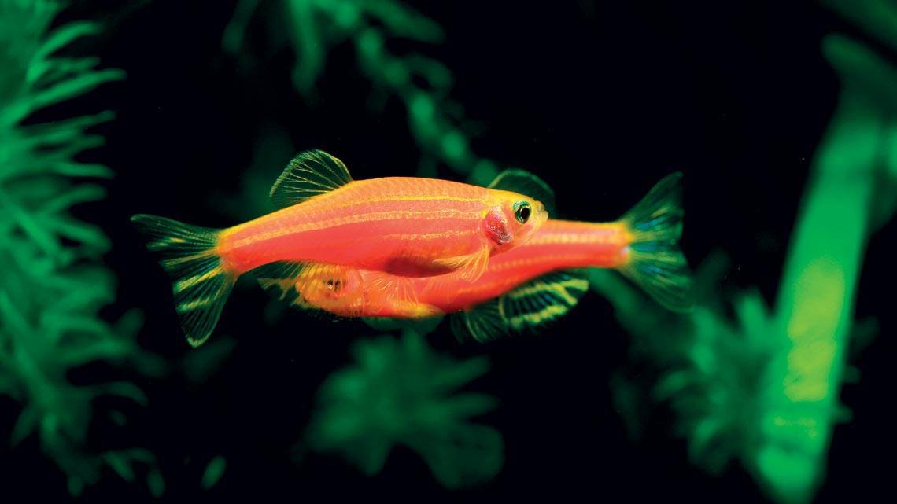

Danio-Zebra | Aquapet

Informações do Produto
GUIA DE CUIDADOS
Tamanho: Em adultos podem atingir aproximadamente 4 a 6 cm.
Origem: O Danio-zebra é originário do Sul da Ásia, incluindo regiões da Índia e do Bangladesh. As variedades fluorescentes são desenvolvidas em cativeiro.
Longevidade: Geralmente entre 3 e 5 anos, podendo viver mais em condições adequadas.
Habitat Natural: Riachos, canais e outros ambientes de água doce, geralmente com corrente moderada.
Os Danios-zebra são peixes pequenos, ativos e conhecidos pelo seu comportamento de grupo.
As variedades fluorescentes apresentam cores intensas, como laranja, verde, vermelho e rosa.
São peixes geralmente pacíficos, mas necessitam de espaço suficiente para nadar.
Aquário
Tamanho: Recomenda-se um aquário com aproximadamente 60 litros ou mais para um grupo pequeno, privilegiando um comprimento suficiente para natação.
Material: Vidro ou acrílico apropriado para aquários.
Quantidade: Recomenda-se manter pelo menos 6 exemplares, preferencialmente em grupos maiores quando houver espaço.
Espaço de natação: Deve existir uma área livre para permitir movimentos rápidos e constantes.
Recomenda-se utilizar uma tampa adequada, pois estes peixes podem saltar.
Temperatura e Iluminação
A temperatura recomendada situa-se geralmente entre 22 °C e 26 °C.
Em Cabo Verde, deve evitar-se o aquecimento excessivo da água, especialmente durante os períodos mais quentes.
A iluminação deverá respeitar um ciclo regular de dia e noite, com aproximadamente 8 a 10 horas de luz.
A fluorescência destes peixes pode destacar-se sob iluminação azul apropriada, mas não é necessário manter luzes especiais permanentemente ligadas.
Qualidade da Água
A qualidade da água é fundamental para manter os Danios saudáveis.
Temperatura: 22 °C a 26 °C.
pH: Aproximadamente 6,5 a 7,5.
Amónia: 0 mg/L.
Nitritos: 0 mg/L.
Nitratos: Preferencialmente abaixo de 20 a 40 mg/L.
Recomenda-se utilizar um sistema de filtragem biológica e mecânica adequado ao aquário.
Devem ser realizadas trocas parciais de água regularmente, conforme os resultados dos testes.
Decoração
O aquário pode incluir plantas naturais, troncos e rochas apropriadas.
Recomenda-se manter espaços livres para natação e zonas com vegetação que proporcionem abrigo.
Evite objetos cortantes e elementos decorativos que possam causar ferimentos.
Dieta e Suplementação
Hábitos alimentares: Omnívoro.
A alimentação deverá ser variada e equilibrada, com alimentos adequados ao tamanho da boca.
Alimentos
Ração: Flocos ou microgrânulos de qualidade para peixes tropicais.
Alimentos complementares: Artémia, dáfnias e pequenos alimentos congelados ou vivos de origem segura.
Frequência: Pequenas porções, geralmente uma ou duas vezes por dia, evitando excessos.
Suplementação
Uma alimentação completa e variada normalmente fornece os nutrientes necessários.
Suplementos adicionais deverão ser utilizados apenas quando necessários.
Comportamento e Compatibilidade
Os Danios-zebra são peixes ativos e gregários.
Devem ser mantidos em grupos, pois o isolamento pode provocar alterações comportamentais e stress.
Podem conviver com outras espécies pacíficas que tenham necessidades ambientais semelhantes.
Deve evitar-se a convivência com peixes agressivos, predadores ou espécies de barbatanas muito longas suscetíveis de serem mordiscadas.
Saúde e Bem-estar
Observe regularmente a atividade, o apetite, a respiração e a condição das barbatanas.
Pontos brancos, dificuldades respiratórias, perda de equilíbrio, isolamento ou falta de apetite persistente podem indicar problemas de saúde.
Perante sinais de doença, recomenda-se consultar um profissional especializado em peixes ornamentais.
Antes de adquirir peixes ornamentais, confirme que dispõe de um aquário adequado e das condições necessárias para garantir o seu bem-estar. As variedades fluorescentes podem estar sujeitas a regras específicas de importação e comercialização. Nunca liberte peixes ornamentais na natureza.
Preço: 350,00 CVE
Para informações sobre disponibilidade, entre em contacto com a nossa loja.
Entrar em Contacto